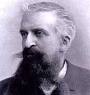

Gustave Le Bon (1841-1931)

Fransýz asýllý bilim ve fikir adamýdýr. Asýl mesleði olan doktorluktan çok, bir fikir adamý ve sosyolog olarak tanýnýp þöhret olmuþtur. Yazdýðý eserleriyle bilim ve siyaset çevrelerini etkilemiþtir. Ülkemizde de deðiþik dünya görüþüne mensup kesimler üzerinde etkili olmuþtur. Ýttihat Terakki ve daha sonraki dönemde Cumhuriyet Halk Fýrkasý, Le Bon’un, “liderlerin topluma, kendi yararlarýna olarak, düþünceleri sürekli tekrar ederek benimsetmeleri” görüþünden çok etkilenmiþtir. Bu amaçla söz konusu düþünceyi ve pratiðindeki sonucu olan, “halk için halka raðmen” anlayýþýný uygulamaya çalýþmýþlardýr. Risale-i Nur’da, Kur’an-ý Kerim hakkýnda söylemiþ olduðu sözlerine yer verilmiþtir.Gustave, 1841 yýlýnda Nogent-le-Rotrou’da doðdu. Eðitimini tamamlayýp doktor oldu. Fransýz-Alman Savaþý’na denk gelen dönemde orduda baþhekim olarak görev yaptý. Mesleðini bir süre devam ettirdikten sonra ilgileri deðiþti. Antropolojiye ilgi duymaya baþladý ve bu alanda ilginç eserler vermeye baþladý. Bir vazife ile seyahate çýktý. Hindistan, Mýsýr ve Suriye’ye seyahatlerde bulundu.
Doðuya yaptýðý seyahat ve incelemeler sonucunda önemli bir birikime sahip olan Gustave, pek çok eser kaleme aldý. Hindistan’da bulunduðu süre zarfýnda tapýnaklarý inceledi. Bir ara Felsefe Kütüphanesi yöneticiliðinde bulundu. Bu esnada sosyal psikoloji, etnografya ve arkeolojiye ait eserler yazdý.
Mýsýr ve Suriye seyahatlerinden sonra “Araplarýn Medeniyeti” adlý eserini 1884 yýlýnda yayýmladý. Avrupalý bir araþtýrmacý olarak yaptýðý antropoloji çalýþmalarý bu ilim dalýndaki çevreler tarafýndan ilgi görmediði halde, Arap Medeniyeti adlý eseri farklý bir alaka gördü. Eser, Sultan II. Abdülhamid’in emriyle Türkçe’ye tercüme edildi. 1913 yýlýnda Paris’te toplanan ilk Arap Kongresinde de eserine önemli atýflarda bulunuldu. Ancak, Gustave’ýn Türk bilim çevreleri üzerindeki asýl etkisi 1924 yýlýndan itibaren artmaya baþladý. Söz konusu eseri dýþýnda Hint Medeniyeti, Þarkýn Ýlk Medeniyeti ve Hint Abideleri adlý önemli eserleri kaleme aldý.
Gustave, antropoloji alanýnda yaptýðý çalýþmalarda beklediði ilgiyi görmezken, bilimsel sosyoloji alanýnda verdiði üçüncü eseri daha çok okundu. Bu eser Türkçe’ye Ýlm-i Ruh-i Ýçtimai adýyla tercüme edildi. Eser bilim, siyaset çevreleri baþta olmak üzere geniþ bir kesimin ilgisini çekti. Gustave, eserinde, halk yýðýnlarýnýn kendini meydana getiren fertlerin ortalamasýný yansýtmadýðýný ileri sürdü. Kolektif ruhun; duygularla þekillenen tepkilerin ortaya konulmasý þeklinde tezahür ettiðini ifade etti. Bu oluþum sýrasýnda çoðunluðun, ortam içinde kendi düþüncelerini bir kenara býraktýðýna ve mantýk yerine duygularýn aðýr bastýðýna iþaret etmektedir.
On dokuzuncu yüzyýl sonunda eserini yazan Le Bon, bu tarihten Ýkinci Dünya Savaþý’na kadar olan zaman diliminde birçok kiþiyi etkiledi. Dönemin siyasi ve entelektüelleri ve askeri liderleri görüþlerinin etkisinde kaldý. Dünyanýn önde gelen sosyologlarýndan biri olarak kabul gördü. Mussolini, Gustave’ýn bütün eserlerini neredeyse ezberleyecek kadar okuduðunu mektuplarýnda belirtti. Bunlarýn dýþýnda birçok lider onun görüþlerinden ve kuramlarýndan esinlenerek stratejiler geliþtirdi.
Ýnsanlarýn büyük felaketlere uðramalarýna sebep olan ihtilallerden nefret eden Gustave Le Bon, toplumu bu tür tehlikelerden korumak için fikir üretmeye çalýþtý ve kafa yordu. Ayrýca, giderek büyük tehdit oluþturmaya baþlayan ve kitlesel halde cereyan eden komünizm ve benzeri hareketler yüzünden yönetimlerin mahvolma tehlikesi ile karþý karþýya olmasýndan büyük endiþe duydu.
Gustave’ýn, toplumun seçkin ve üstün yeteneklere sahip kiþiler tarafýndan yönetilmesi gerektiði düþüncesi siyasilerin ilgisini daha çok çekti. Ancak son asýrda bunun bir bakýma imkansýz olduðunu da gördü. Bunun yerine fikir ve düþüncelerin halka benimsetilmesinin toplumun ileriye götürülmesi için gerekli olduðunu ileri sürdü. Bunu gerçekleþtirmek için de liderler fikirlerini, kitlelere kendi yararlarýna olarak, düþüncelerini sürekli tekrar ederek benimsetmeleri gerekir. Bu düþünce, pratikte, halk için halka raðmen gibi bir neticeyi de beraberinde getirdi. Bu fikir, Ýttihat ve Terakki, daha sonraki dönemde de Cumhuriyet Halk Fýrkasý yöneticileri tarafýndan uygulamaya konuldu. Toplumu þekillendirme ve kendi düþünceleri doðrultusunda etkileme gayretine giriþildi. Hatta düþünürün fikirlerinden çok etkilenen bazý yöneticiler, müellifin eserinin, devletin deðiþik kademelerinde görev yapanlarýn eline verilmesi gerektiði ve onlara okutulmasýnýn elzem olduðu fikrini ileri sürdüler.
Risale-i Nur’da, dünyaca tanýnmýþ ve insanlarý etkilemiþ olan þahsiyetlerin, Ýslamiyet ve Kur’an-ý Kerim hakkýndaki fikirlerine yer verilmekte ve bu konulardaki görüþleri aktarýlmaktadýr. Bu vesile ile bir çok ilim ve fikir adamýnýn görüþlerine yer verilmektedir. Bunlardan birisi de Doktor Le Bon’dur. Le Bon’un, “Kur'ân, insanýn dimaðýnda þüpheden, tezelzülden vareste canlý ve kuvvetli bir kanaat vücuda getirir” (Risale-i Nur Külliyatý, Nesil Y., 2. C. Ýstanbul 1996, s. 2331) þeklindeki ifadelerine yer verilmektedir.
Gustave Le Bon, Arap Medeniyeti adlý eserinde de Ýslamiyet ve Müslümanlýk hakkýndaki görüþlerine yer vermektedir; “Gerçek þudur ki, Müslümanlardaki kölelik Hýristiyanlardaki kölelikten tamamen ayrýdýr." Ýslam’da kölelerin azat edilmesi o kadar teþvik edilmiþtir ki, her düþünen ‘Ýslam köleliðin varlýðýndan müthiþ bir nefret duyar’ kanaatine varýr. Nisa:36. ayeti kölelere iyi davranmayý emreder. Hz.Ali’nin rivayetine göre Allah Resulü (asm); ‘Köleleriniz hakkýnda Allah’tan korkunuz’ buyurmuþtur. ‘Köleleriniz, kardeþlerinizdir’ diyor. Ýbn-i Ömer’in rivayeti ise þöyle: ‘Kim kölesinin yüzüne bir tokat atsa veya onu dövse onun keffareti, köleyi azat etmesidir.’ Ýmam Ahmed-Müslim-Ebu Davud ‘Ýslam köleliði birden kaldýrmadý. Çünkü bu, zamana baðlý, milletler arasý bir mesele idi. Ama onun yollarýný daralttý ve kölelik müessesinin zamanla ortadan kalkmasý için hürriyete kavuþturmayý teþvik etti.’” (Sadreddin Yüksel -“Ýslami Araþtýrmalar” - Madve Yayýnlarý ) (http://www.cevaplar.org/index.php?khide=visible&sec=11&sec1=66&yazi_id=3696)
Gustave’ýn bazý görüþleri; “Bilmek, ezberlemek deðil, sebep-sonuç arasýndaki iliþkiyi kurabilmektir.” “Bugün ekilen ve yarýn toplanacak olan fikir ve inançlarý anlayabilmek için, zemini yani tarlayý iyi incelemek gerekir. Bir gençliðe verilen eðitim imkaný, bu memleketin yarýn ne olacaðý hakkýnda geniþ fikirler ortaya koyabilecek niteliktedir.” “Eþitliðin olmadýðý yerde haksýzlýk baþ kaldýrýr. Vatanperverlik duygusunu yaþamayan toplum, tarihte yok olmaya mahkumdur” Gustave Le Bon.
Gustave Le Bon, 1931 yýlýnda, 90 yaþýnda Paris’te öldü. Arkasýnda çok sayýda eseri miras olarak býraktý.